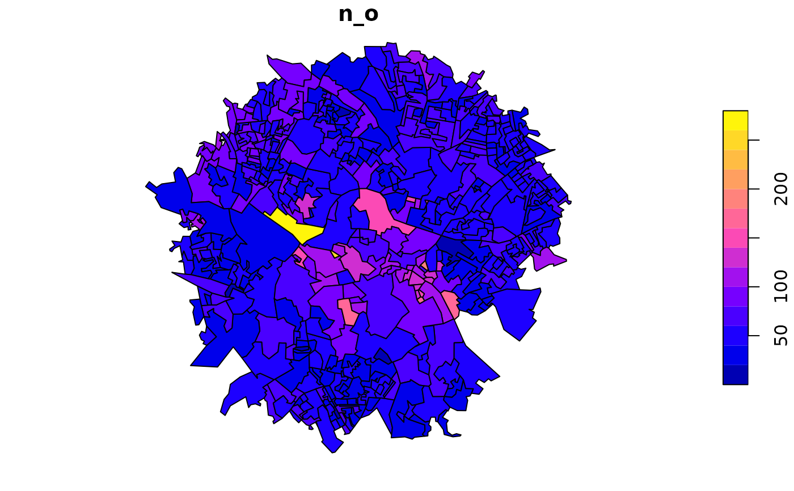

This dataset contains the number of trips originating from each output area (OA) in Leeds.
Examples
head(si_oa_wpz_o)
#> Simple feature collection with 6 features and 2 fields
#> Geometry type: MULTIPOLYGON
#> Dimension: XY
#> Bounding box: xmin: -1.589455 ymin: 53.79168 xmax: -1.576951 ymax: 53.80234
#> Geodetic CRS: WGS 84
#> OA11CD n_o geometry
#> 1 E00056848 24 MULTIPOLYGON (((-1.581762 5...
#> 2 E00056849 27 MULTIPOLYGON (((-1.577746 5...
#> 3 E00056874 92 MULTIPOLYGON (((-1.585058 5...
#> 4 E00056876 103 MULTIPOLYGON (((-1.58512 53...
#> 5 E00056885 48 MULTIPOLYGON (((-1.583388 5...
#> 6 E00056886 29 MULTIPOLYGON (((-1.584578 5...
sf:::plot.sf(si_oa_wpz_o["n_o"])
